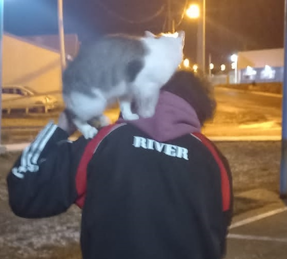

Planta
- Ariel
- 22 años
- Argentina
- Tierra del Fuego
Un pibre que le gusta pasar el tiempo en la compu y/o haciendo ejercicio. Soy callado y de pocos amigos. Me gusta el rap, andar en skate, la escalada deportiva y los palitos de pollo (Va, el pollo en general). Mi color favorito es el cian y mi comida favorita son las empanadas (de pollo, claramente).